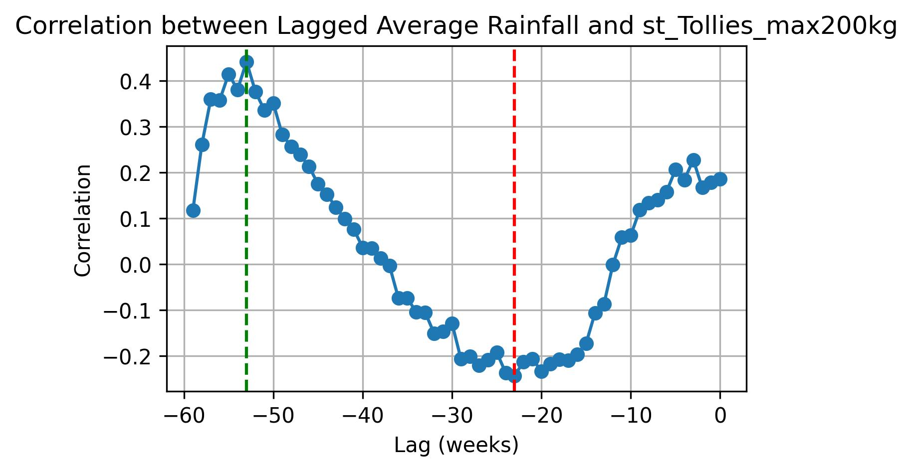
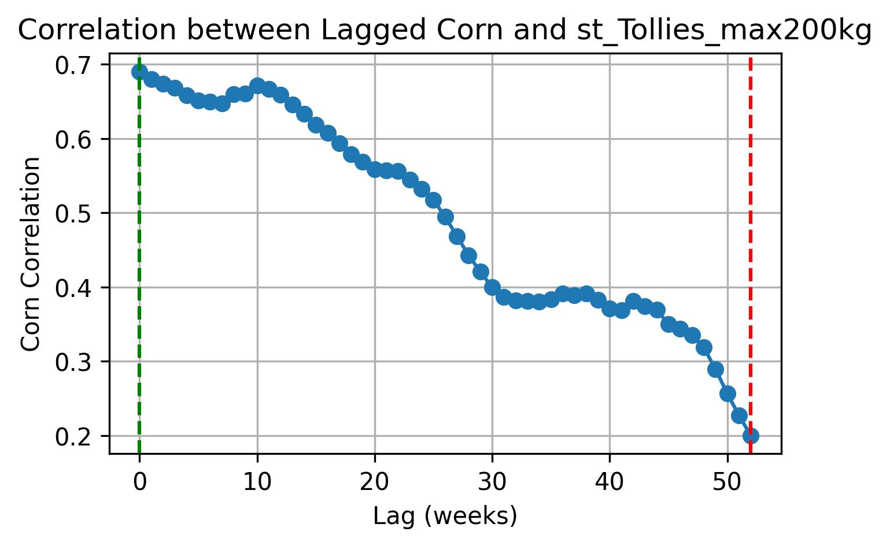
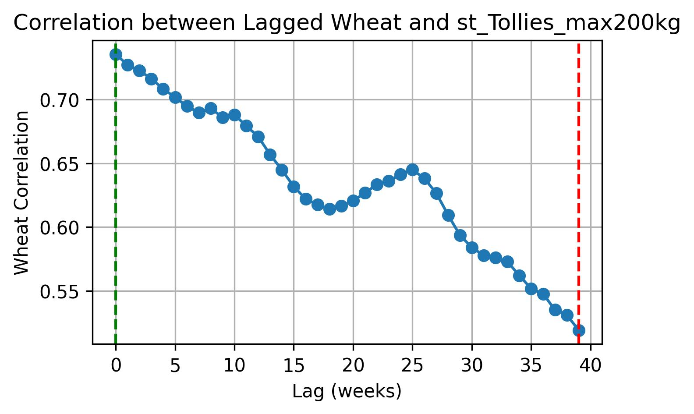
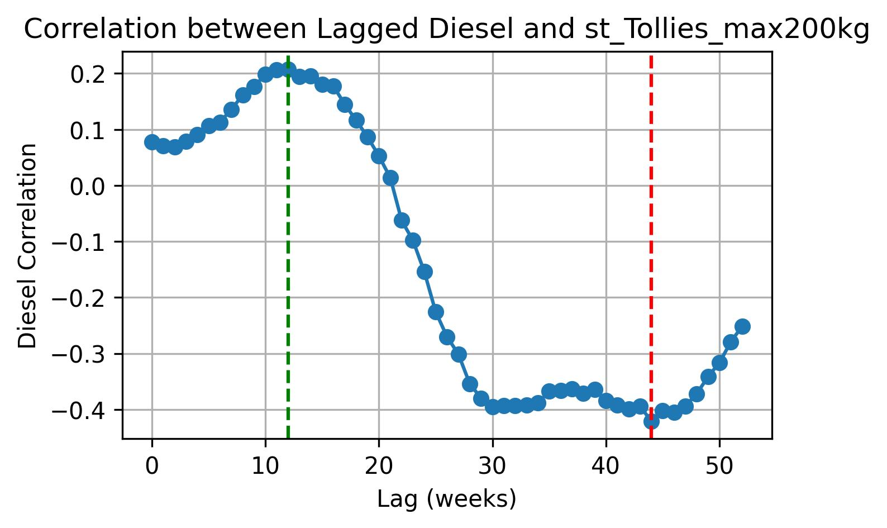
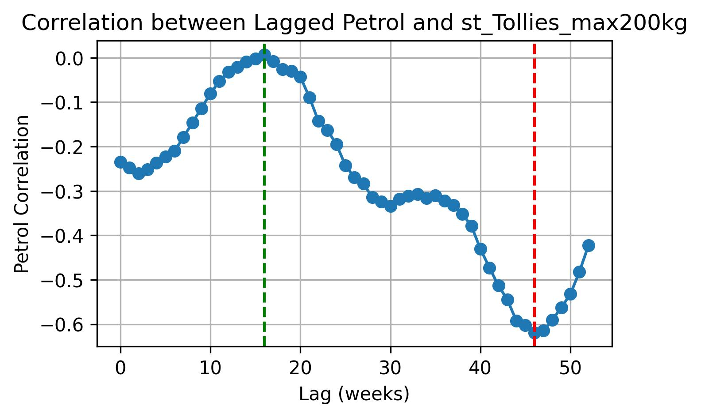
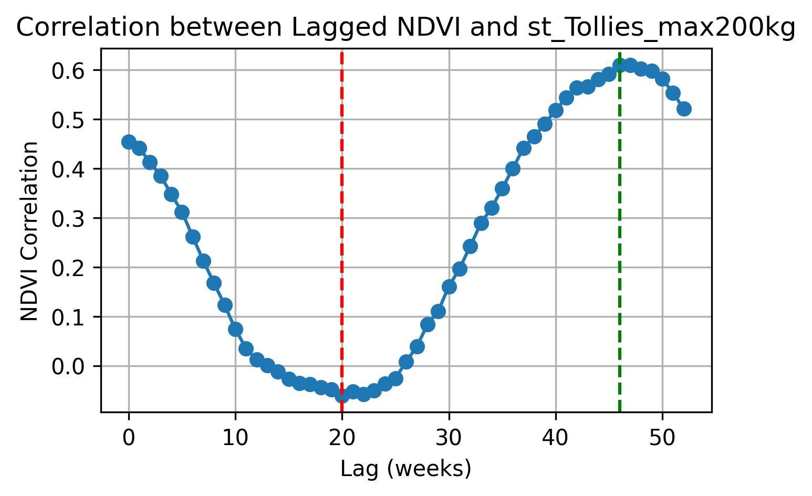

The purpose of this page is to provide an overview of the feature engineering and variable selection process used during the development of the time series forecasting model. A range of potential exogenous variables were investigated to determine whether they contained predictive information that could improve the accuracy of livestock price forecasts.
Since changes in environmental and economic conditions do not typically influence livestock prices immediately, each candidate variable was analysed across multiple lagged time intervals. This allowed delayed relationships between the explanatory variables and livestock prices to be identified. For every candidate variable, the lag that demonstrated the strongest predictive relationship was selected for inclusion in the modelling dataset.
The following sections summarise the analysis performed for each exogenous variable, illustrating how lagged features were generated and evaluated before being incorporated into the final training and testing datasets. Once all relevant features had been prepared, the dataset was ready for model training, validation, and performance evaluation.
Rainfall is one of the most influential environmental factors affecting livestock production; however, its impact is rarely immediate. When rainfall occurs, it first replenishes soil moisture and stimulates pasture growth. As grazing conditions improve, livestock have access to more abundant and nutritious forage, resulting in gradual improvements in body condition, weight gain, and overall productivity. These biological processes take time, meaning that changes in rainfall are only reflected in livestock markets after a delay.
For this reason, the current week's rainfall is often a poor predictor of current livestock prices. Instead, rainfall recorded several weeks or even months earlier may have a much stronger relationship with market prices. The length of this delay can vary depending on seasonal conditions, grazing systems, and regional farming practices.
To account for these delayed effects, multiple lagged rainfall variables were generated and evaluated during the feature engineering process. Each lag represents rainfall measured a specific number of weeks before the current observation. By analysing a range of lag intervals, it was possible to identify which historical rainfall periods contained the greatest predictive information for livestock prices.
Only the lagged rainfall variables demonstrating the strongest statistical relationship with the target variable were retained for model development. This approach enables the forecasting model to capture the delayed influence of climatic conditions while avoiding unnecessary or redundant predictors.

To identify the most informative rainfall variables for the forecasting model, the Pearson correlation coefficient was calculated between livestock prices and rainfall observed at a range of historical lag intervals. Each lag represents rainfall that occurred a specific number of weeks before the corresponding livestock price observation.
The analysis revealed both strong positive (green) and strong negative (red) statistically significant correlations. A positive correlation indicates that higher rainfall at a particular lag is associated with higher livestock prices in the future. This relationship is consistent with improved grazing conditions, increased pasture availability, and healthier livestock, all of which contribute to improved production outcomes over time.
Conversely, a negative correlation indicates that higher rainfall at a particular lag is associated with lower livestock prices. Although this may initially appear contradictory, it reflects the complex dynamics of agricultural markets. Favourable rainfall can increase pasture availability, allowing producers to retain livestock for longer and improve animal condition before marketing them. As more animals eventually enter the market, increased supply may place downward pressure on prices. Similarly, seasonal production cycles and producer management decisions can result in delayed inverse relationships between rainfall and market prices.
It is important to note that a statistically significant correlation does not imply that the relationship must be positive. Both positive and negative correlations can provide valuable predictive information, provided they are statistically significant and agriculturally meaningful. Consequently, both were evaluated during the feature engineering process.
Rather than selecting variables solely based on the largest correlation coefficient, each candidate lag was assessed according to its statistical significance, predictive value, and practical interpretation within the livestock production cycle. This ensured that only rainfall variables contributing meaningful forecasting information were considered for inclusion in the modelling dataset.
Commodity prices, such as corn and wheat, play a significant role in livestock production as they represent the primary cost of animal feed. Changes in feed prices directly influence production costs, profitability, and the management decisions made by livestock producers. Consequently, fluctuations in commodity prices can affect livestock markets and, ultimately, livestock prices.
Although commodity prices generally have a more immediate economic impact than environmental variables such as rainfall, their influence is not always reflected instantaneously in livestock prices. Producers often require time to adjust feeding strategies, production plans, purchasing decisions, and the timing of livestock sales in response to changing feed costs. As a result, both current and historical commodity prices may contain valuable predictive information.
To capture these delayed economic effects, lagged versions of the commodity price variables were generated and evaluated using Pearson correlation analysis. Multiple lag intervals were considered to determine which historical prices exhibited the strongest relationship with livestock prices. This systematic approach ensured that only the most informative lagged commodity variables were selected for inclusion in the forecasting dataset.


Unlike environmental variables such as rainfall, grain prices represent an economic input cost that influences livestock production decisions almost immediately. Since feed costs directly affect producer profitability and marketing strategies, recent grain prices contain the greatest predictive information for current livestock prices. The Pearson correlation analysis therefore shows the strongest relationship at the smallest lag intervals, with the correlation gradually decreasing as historical prices become older. This gradual decline reflects the persistence of grain prices over time, where consecutive weekly prices remain similar but become progressively less representative of current market conditions. Consequently, shorter lag intervals were expected to provide the greatest predictive value during feature engineering.
Fuel prices are an important economic indicator within the livestock industry, as they directly influence the cost of agricultural production, transportation, and the movement of goods throughout the supply chain. Changes in fuel prices affect producers through increased operating expenses, which may ultimately influence livestock production costs and market prices.
The impact of fuel prices is not always immediate. Farmers and transport companies typically do not adjust their operations the moment fuel prices change. Instead, increased or decreased fuel costs gradually influence management decisions, transportation schedules, feed delivery costs, and marketing strategies. Consequently, historical fuel prices may provide more useful predictive information than current prices alone, making lagged fuel variables valuable candidates for time series forecasting.
Two fuel types were considered during this analysis: petrol and diesel. Although both are important indicators of energy costs, they influence the agricultural sector in different ways. Diesel is the primary fuel used in commercial agriculture. Tractors, harvesters, irrigation pumps, generators, trucks, and many other agricultural machines rely almost exclusively on diesel. As a result, fluctuations in diesel prices have a direct impact on farm operating costs, harvesting activities, transportation expenses, and the delivery of livestock and feed. Diesel prices are therefore expected to have a stronger and more direct relationship with livestock prices.
Petrol, in contrast, is primarily used for passenger vehicles and smaller utility vehicles. While increases in petrol prices still contribute to the overall cost of transportation and may influence consumer spending and broader economic conditions, their direct effect on livestock production is generally smaller than that of diesel. Nevertheless, petrol prices remain a useful economic indicator, as they reflect broader movements in energy markets and can indirectly influence agricultural supply chains and market behaviour.
To evaluate these relationships, lagged versions of both petrol and diesel prices were generated and analysed using Pearson correlation analysis. By assessing multiple historical lag intervals, the analysis identified which fuel price observations contained the greatest predictive information for livestock prices. This approach ensured that the forecasting model incorporated the most informative representation of fuel cost dynamics while accounting for the delayed response of agricultural markets.


The Normalized Difference Vegetation Index (NDVI) is a satellite-derived measure of vegetation health and density. It provides an indication of the amount and condition of green vegetation across a landscape and is widely used to monitor pasture growth, crop development, and drought conditions. Since livestock production depends heavily on the availability and quality of grazing, NDVI serves as an important environmental indicator of forage availability.
Unlike rainfall, which measures the amount of precipitation received, NDVI reflects the vegetation's response to that rainfall. Following a rainfall event, pasture does not become immediately available for grazing. Instead, vegetation requires time to absorb moisture, germinate, and grow before improvements in grazing conditions are observed. Consequently, changes in NDVI often provide a more direct representation of the forage available to livestock than rainfall alone.
The influence of vegetation on livestock prices is also delayed. As grazing conditions improve, livestock gradually gain weight, body condition improves, and producers adjust their management and marketing decisions. These biological and management processes take time before they are reflected in livestock markets. For this reason, historical NDVI values often provide more useful predictive information than the current week's vegetation conditions.
To capture these delayed effects, lagged NDVI variables were generated and evaluated using Pearson correlation analysis. Multiple historical lag intervals were investigated to determine which periods of vegetation growth exhibited the strongest relationship with livestock prices. By selecting the most informative lagged NDVI variables, the forecasting model was able to incorporate the delayed influence of pasture conditions while avoiding unnecessary or redundant predictors.

Although both rainfall and NDVI describe environmental conditions, they measure different stages of the production cycle. Rainfall represents the cause, while NDVI represents the result of that rainfall. Consequently, NDVI often provides a more direct indication of the grazing conditions experienced by livestock and may exhibit a different lag structure than rainfall. Evaluating both variables independently allows the modelling process to identify which environmental indicator provides the greatest predictive value for livestock prices.
After identifying the relevant lagged relationships between livestock prices and the external explanatory variables, the final modelling dataset was constructed. The purpose of adding lagged variables was to allow the model to capture delayed market responses, where environmental and economic conditions influence livestock prices only after a certain period.
The modelling approach therefore needed to account for two important characteristics:
Several forecasting models were developed and evaluated to determine the most appropriate approach for predicting weekly livestock prices.
A traditional linear regression model was initially developed as a baseline approach. This model estimates livestock prices as a linear combination of historical and external explanatory variables.
Although useful for understanding relationships between variables, linear regression assumes that observations are independent and does not naturally account for the sequential structure of time series data. Since livestock prices contain strong temporal patterns and seasonal behaviour, this model was limited in its ability to capture price dynamics.
A LASSO (Least Absolute Shrinkage and Selection Operator) regression model was introduced to improve variable selection by shrinking less important predictors towards zero. This approach was particularly useful given the large number of lagged environmental variables included in the dataset. Multiple rainfall and NDVI lag periods were considered, and LASSO helped identify variables that contributed most towards explaining livestock price variation.
However, similar to ordinary linear regression, LASSO does not explicitly model autocorrelation, seasonality, or other time-dependent structures present in livestock markets.
The autoregressive model focuses on predicting future livestock prices based only on previous price observations.
This model captures short-term price momentum, where recent market prices influence future values. However, it does not incorporate external drivers such as rainfall, vegetation conditions, or commodity prices, which are important factors influencing agricultural markets.
The SARIMA (Seasonal Autoregressive Integrated Moving Average) model was developed to capture historical price behaviour, trends, short-term fluctuations, and annual seasonality.
Livestock prices often follow yearly patterns due to production cycles, seasonal demand, and agricultural conditions. Therefore, incorporating a seasonal component with a period of 52 weeks allowed the model to capture recurring annual behaviour. However, SARIMA only relies on historical price information and cannot directly incorporate external explanatory variables.
The final selected model was the SARIMAX (Seasonal Autoregressive Integrated Moving Average with Exogenous Variables) model. SARIMAX extends the SARIMA framework by allowing external variables, known as exogenous variables, to be incorporated alongside historical price information. This made it the most suitable modelling approach for livestock price forecasting.
The SARIMA component captures:
The exogenous component incorporates additional factors influencing livestock markets, including:
The selection of SARIMAX was based on its ability to represent the complex mechanisms driving livestock prices. Agricultural markets are not purely historical systems; they are influenced by biological processes, weather conditions, production costs, and market forces. A model relying only on previous livestock prices may fail to capture important changes caused by drought conditions, improved grazing availability, or changing input costs. SARIMAX provides a more realistic forecasting framework by combining:
By combining these components, SARIMAX captures both what has historically occurred in the livestock market and why future prices may change due to external conditions. This allows the model to move beyond simple forecasting and provides insight into the factors contributing to livestock price movements.